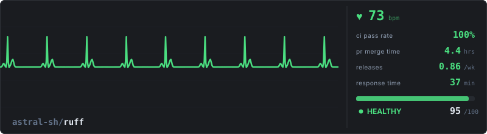
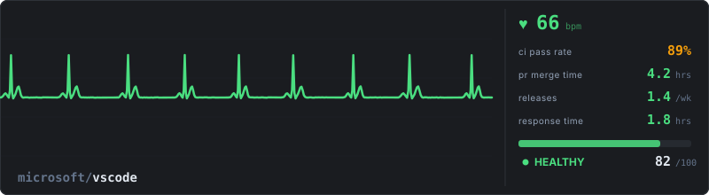
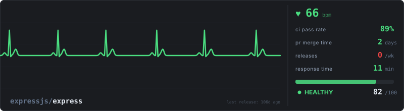
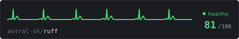
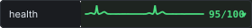

Vital signs for every repository
Your repo's health, visualized as a living ECG. Waveform shape, rhythm, and speed driven by real metrics from the GitHub API.
Visual Showcase
Three real repositories, three very different vital signs. The shape of the ECG encodes CI health, merge velocity, release cadence, and community responsiveness.



How It Works
Each feature of the ECG waveform is controlled by a different dimension of repository health.
Low CI pass rates introduce arrhythmia into the waveform. Below 35%, the P-wave disappears entirely, signaling a fundamentally broken build pipeline.
Slow merges elevate the T-wave amplitude. When median merge time exceeds 7 days, the T-wave inverts, a classic indicator of contributor friction.
More frequent releases produce a faster heartbeat. When release activity drops to zero, the waveform flatlines, indicating a stalled project.
Slow issue response times add noise and drift to the ECG baseline. A clean, flat baseline means the community is responsive and engaged.
Population Scoring
Scoring is population-based, not arbitrary. Each metric is a percentile rank within your repo's size cohort.
The distribution above reflects real scoring data across the full population. A "healthy" rating means a repository outperforms 75% of similarly-sized projects on every metric.
Output Formats
Embed a full monitor in your README, drop a mini sparkline into a table, or add a badge to your repo header.
Monitor
800 x 220

Mini
480 x 80

Badge
280 x 32
Quick Start
name: Repo Health Pulse on: schedule: - cron: '0 6 * * 1' # every Monday at 06:00 workflow_dispatch: jobs: pulse: runs-on: ubuntu-latest steps: - uses: actions/checkout@v4 - uses: ahlert/repo-health-pulse@v1 with: repo: ${{ github.repository }} token: ${{ secrets.GITHUB_TOKEN }}